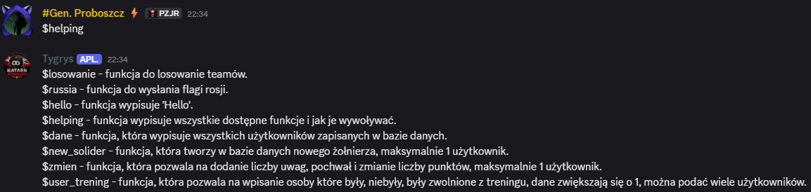
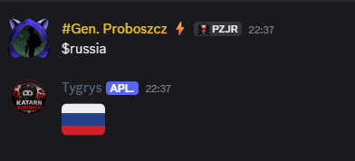
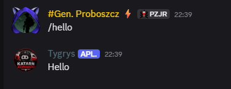
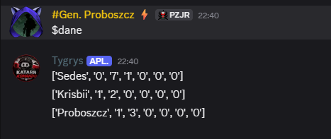
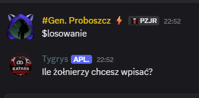

Dokumentacja Bota Tygrys
Jest to oficjalna dokumentacja bota z ktorej się dowiesz jak obsługiwać bota i co oznaczają dane Errory
Aby użyć bota należy przed funkcją wpisać '$' bądź '/'
Helping
Funkcja ta powoduje wypisanie wszystkich dostępnych funkcji, które bot posiada, a możesz je użyć.

Russia
Funkcja ta wywołuje wysłanie przez bota flage rosji.

Hello
Funkcja powoduje, że bot się przywita z tobą

Dane
Funkcja wywołuje pokazywanie wszystkich użytkowników zarejestrowanych w bazie z ich parametrami, pokazuje to jako lista ([]), a parametry jako oznaczenie cudzysłowia ("" albo '')

Dane są przypadkowe, więkoszość z nich nie jest prawdziwa
Losowanie
Funkcja która umożliwia losowanie drużyn podczas treningu.
Na początku bot prosi o liczbę żołnierzy jaka będzie losowana (najczęściej liczba ich jaka jest na treningu), należy podać liczbę całkowitą.

Następnie bot każe nam wprowadzić tyle nicków żołnierzy jaką podaliśmy, co należy uczynić, nie ma możlwości tu zwiększenia lub zmniejszanie liczby żołnierzy w funckji losującej.
Po tym bot losuję osoby do 2 drużyn, pokazując to na bierząco, po czym na końcu pokazuje ostateczny skład teamu (drużyny) 1 i teamu 2
Na końcu należy mu poddać 1 albo 2 w zależności czy chcemy losowanie kontynuować czy też nie